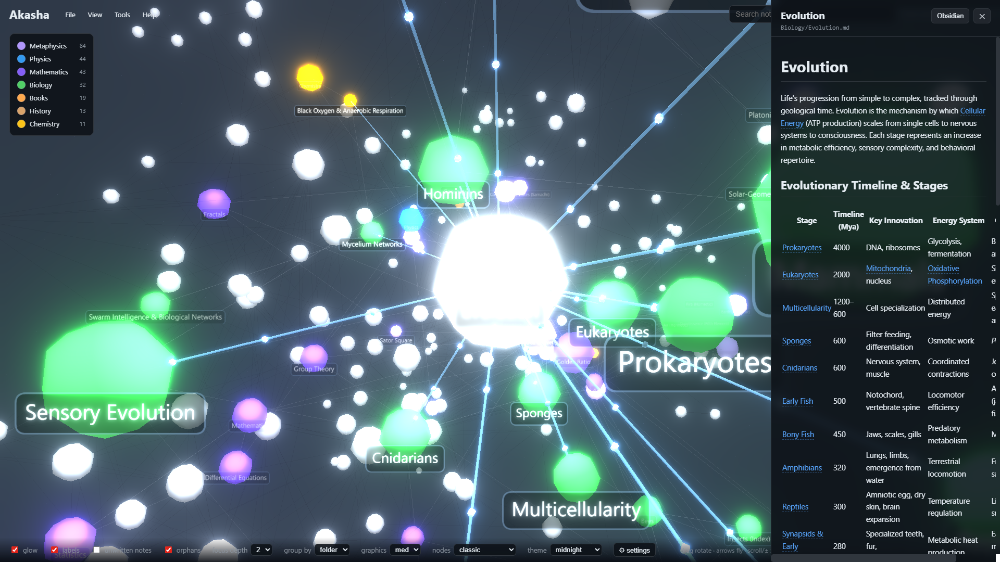
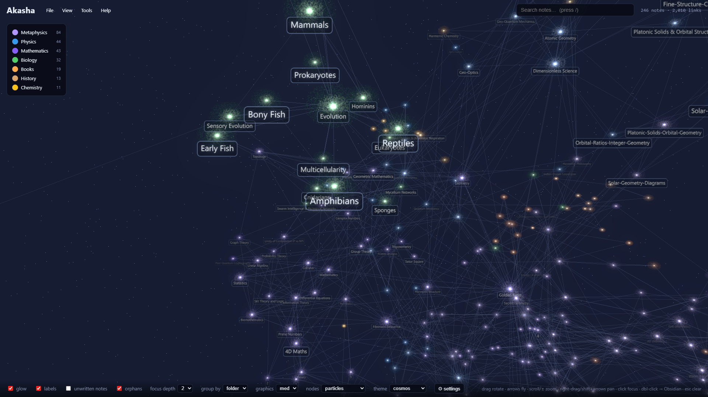

4,011 notes · 4,930 links · one machine
Fly through everything you know. Then talk to it.
Solaris turns your Obsidian vault, or any folder of linked Markdown, into a smooth 3D universe: thousands of notes, tens of thousands of links, on your own machine. A real-time voice assistant explores it with you, researches the web, and files what you create back into your notes. Free, open source, no subscription.
npx solaris "path/to/YourVault"
MIT licensed · runs on localhost · uploads nothing
a 4,000-note vault · every node and link rendered at once · still smooth


Who is Solaris for?
If any of these sounds like your vault, you are the person we built this for.
Your graph view froze years ago.
Past a few thousand notes the built-in graph lags, pins one CPU core while your GPU sits idle, and the official answer is "that's a limitation, not a bug."
When it does render, it's a hairball.
A dense 2D blob where every cluster overlaps. You built the links; you still can't see the shape of what you know.
Your knowledge is trapped in Word, PDF, and Google Docs.
Getting it into clean notes means paste-and-scrub sessions that eat half an hour per document and still leave formatting garbage behind.
AI answers vanish into chat scroll.
You get a wall of text, it's gone by tomorrow, and none of it connects to the notes you already have.
Every tool wants $10-20 a month.
One subscription per app, whether you used it this month or not. Renting your own second brain gets old.
Cloud tools want your notes on their servers.
Your vault is years of your thinking. Uploading it to someone else's silo to get "AI features" is a bad trade.
Your vault, lit up.
Same six problems. This is what they look like after Solaris.
A galaxy that stays smooth.
Thousands of notes and tens of thousands of links rendered at once, on your GPU. Orbit, dive, and read without a stutter. Big vaults are the point, not the edge case.
Clusters you can actually read.
3D layout separates your domains into constellations. Color by folder or tag, filter with rules that persist, spot the bright strands between fields you never knew were related, find the orphans and the gaps.
Drop a file, get a linked note.
PDF, Word, slides, a web page, even a YouTube URL (you get the transcript). Clean preview first, saved into your vault only when you approve, connected to what you already have.
Results that become notes, not scroll.
Web research arrives analyzed, and one click saves it as a note linked into your base. Select any text and launch the next question from it. Nothing you produce gets lost.
Free core, cents-per-use extras.
The visualizer costs nothing, forever. Smart features run on your own pay-per-use keys. Semantic search over your notes is fully local and free.
Everything stays on your machine.
Plain Markdown in your own folders. Nothing is uploaded unless you explicitly ask. Every write is previewed, guarded, and journaled. Obsidian stays one click away for hand-editing.
Don't just stare at your vault. Talk to it.
Real-time voice, in your language. Interrupt it mid-sentence; it keeps up. Correct it; it adapts. It opens panels, finds notes, researches, drafts documents, and files them where they belong.
Three of the best voice engines available, your choice, your key. What you make together lands as linked notes in your vault, not as chat history you'll never find again.
There was no tool that did all three.
| Solaris | Obsidian graph | 3D graph plugins | TheBrain / InfraNodus | Voice note apps | |
|---|---|---|---|---|---|
| Handles 5k+ notes smoothly | Yes, on your GPU | No (official limitation) | No (crash / disabled) | Sluggish, bloated | n/a |
| 3D navigable map | Yes | No | Partial, unmaintained | 2D, cluttered | No |
| Real-time voice agent | Yes | No | No | No | Capture only |
| Your own Markdown files | Yes | Yes | Yes | Proprietary / cloud | Their cloud |
| Price | Free + your own keys | Free | Free | $180/yr+ or €12-66/mo | Monthly subscriptions |
Solaris complements Obsidian: one click opens any note there for hand-editing. The contrast is with the graph view, not the editor.
Born from an AI. Raised by a human.
Solaris started as a repository with a single star, created by Fable, the most powerful AI in the world, and left open source. A human found it while hunting for a way to see a 5,000-note knowledge base that every other tool choked on. This one flew. He audited the code, adopted it, and has been evolving it since: voice, research, ingestion, versioning. Now it's yours too. MIT licensed, open to everyone.
Free. And the smart parts cost cents, not subscriptions.
$0 · forever
Always free
- The 3D universe, search, filters, themes
- Reader with Obsidian hand-off
- Note version history and restore
- Open source, MIT
$0 · fully local
Local intelligence
- Semantic search over your own notes
- Related notes and gap suggestions
- No key, no cloud, no cost
your keys · pay per use
Bring your own keys
- Web research credits last months, cents per query
- Language models pay-as-you-go, efficient defaults
- Voice the same way: your key, your usage
- No monthly fee, ever
Comparable subscription tools run $10-20 per month, forever, whether you open them or not. Solaris charges you nothing and lets you pay providers only for what you actually use.
Your notes never leave home.
- ●Runs entirely on your machine. The core uploads nothing, ever.
- ●Web and AI features are opt-in. They only activate when you turn them on, with your own keys.
- ●It never overwrites a note silently. Writes are user-triggered, previewed, and journaled.
- ●All the code is open. Read it, fork it, or just use it.
Your vault is already a universe. See it tonight.
One command. No signup, no migration, no config. If you have a folder of Markdown, you're 60 seconds from flying through it.
npx solaris "path/to/YourVault"